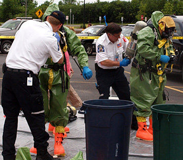

Services: Ontario County Haz-Mat Response Team
Victor-Farmington Volunteer Ambulance is the designated hazardous materials ambulance for Ontario County's Haz-Mat Team. Our agency responds to calls for assistance with incidents in Ontario County and other counties as requested. Responsibilities include rescuer medical monitoring, rescuer rehab and advanced life support and treatment of rescuers.
Haz-Mat Emergency Response Team Membership Application
2011 Deployments:
Chemical Suicide (Bloomfield, NY)
Chemical Spill (Canandaigua)
Chemical Spill (Canandaigua)
Chemical Spill (Seneca Falls)
If you're interested in joining the extra duty dedicated volunteer group you must meet the following experience requirements:
• Active Member of an EMS agency for 3 years
• Attend monthly trainings as scheduled by Ontario County Emergency Management Office
• Certified at EMT or Higher
• Training relevant to Hazardous Material Response, Such as Hazardous Materials First Responder at the Operations Level
• Basic Hazmat Life Support (BHLS)
• Advanced Hazmat Life Support (AHLS)